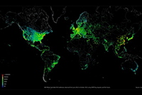

| Почетна Забава Спорт Фото | ||||
| Еден ден на интернет прикажан на фотографија
 Ја гледате фотографијата на Интернет мрежата во текот на еден ден, во која жолтите и црвените точки го претставуваат високиот степен на користење, а додека сините и зелените го прикажуваат нискиот степен на употреба на интернетот во текот на 24 часа. Непрекриениот дел од картата ги претставува деловите на светот каде што користењето на интернетот не е регистриран. прочитај повеќе |
||||
| Десет работи кои ги прават успешните луѓе
Секогаш ќе добивате исти резултати ако мислите на тоа што мислат и другите. Но понекогаш мора да скршнете таму каде што сите одат право: Ви го претставуваме прегледот од 10 работи кои според Форбс, ги прават успешните луѓе, а не се многу очигледни. прочитај повеќе |